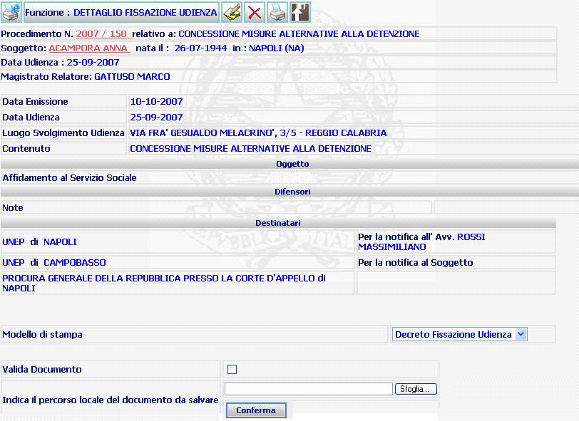
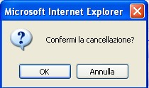

DETTAGLIO FISSAZIONE UDIENZA: La funzione consente la stampa del decreto di fissazione udienza a seguito dell'inserimento della data di fissazione udienza nel procedimento.
LE MASCHERE VIDEO
La funzione in esame viene realizzata attraverso la maschera seguente che è composta da più sezioni:
intestazione che contiene dati relativi a estremi del procedimento Sius, il nome e cognome del soggetto, nonchè tutti i dati relativi all'udienza;
oggetto indica l'oggetto del procedimento;
difensori visualizza i dati relativi all'avvocato, indicando se lo stesso è stato nominato di fiducia, d'ufficio o nella fase di giudizio;
destinatari visualizza i destinatari della notifica del decreto di fissazione udienza;

COME FARE PER ...
| Per visualizzare il dettaglio del procedimento Sius l'utente deve cliccare sul link relativo all'Anno/Numero del procedimento Sius evidenziato in rosso; |

| Per visualizzare il dettaglio del soggetto l'utente deve cliccare sul link relativo al cognome/nome del soggetto evidenziato in rosso; |

| Per modificare la
data di fissazione udienza nel procedimento l'utente deve cliccare sul
pulsante
|
| Per
cancellare la data di fissazione
udienza
l'utente deve
cliccare sul pulsante
|
| Per generare la stampa del
decreto di fissazione udienza l'utente deve cliccare sul pulsante
| |
| Per
validare un documento,
senza dover
generare la stampa del documento stesso, l'utente deve selezionare il pulsante
|
CAMPI
sono i seguenti:
| Modello di stampa | Campo contenente l'elenco dei modelli di stampa legati al decreto di fissazione udienza. |
| Percorso locale del documento da salvare | Percorso del file da indicare opzionalmente durante il processo di validazione |
PULSANTI
Oltre ai pulsanti
 ,
,
 ,
,
 , facenti parte del gruppo di
pulsanti di "Uso Comune" sono
presenti i seguenti pulsanti:
, facenti parte del gruppo di
pulsanti di "Uso Comune" sono
presenti i seguenti pulsanti:
|
PULSANTE |
DESCRIZIONE |
|
|
Questo pulsante ha lo scopo di generare la stampa del documento decreto di fissazione udienza e successivamente consente di attivare il processo di validazione |
|
|
Questo pulsante ha lo scopo di consentire la validazione del documento quando non venga generata la stampa del documento stesso. |
BOTTONI
Oltre ai comandi funzionali relativi al menù verticale sono presenti i seguenti bottoni:
|
COMANDI |
DESCRIZIONE |
|
|
Attraverso questo comando l'utente conferma la validazione dell'atto. |
|
|
Attraverso questo comando l'utente può cercare il documento modificato, ovvero quello non prodotto dal sistema, nel drive nel quale è stato salvato. |
CONTROLLI
nel caso di richiesta di cancellazione
 della data di fissazione udienza il sistema richiede una ulteriore conferma
presentando il seguente avviso:
della data di fissazione udienza il sistema richiede una ulteriore conferma
presentando il seguente avviso:
